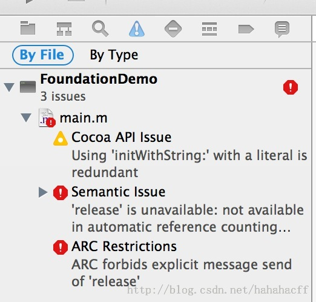
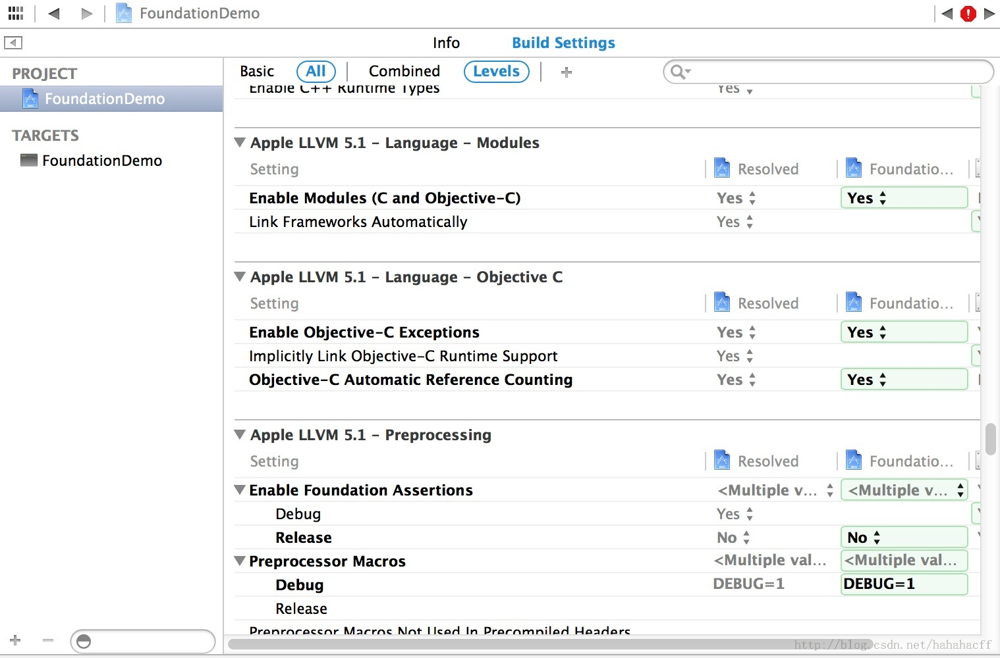
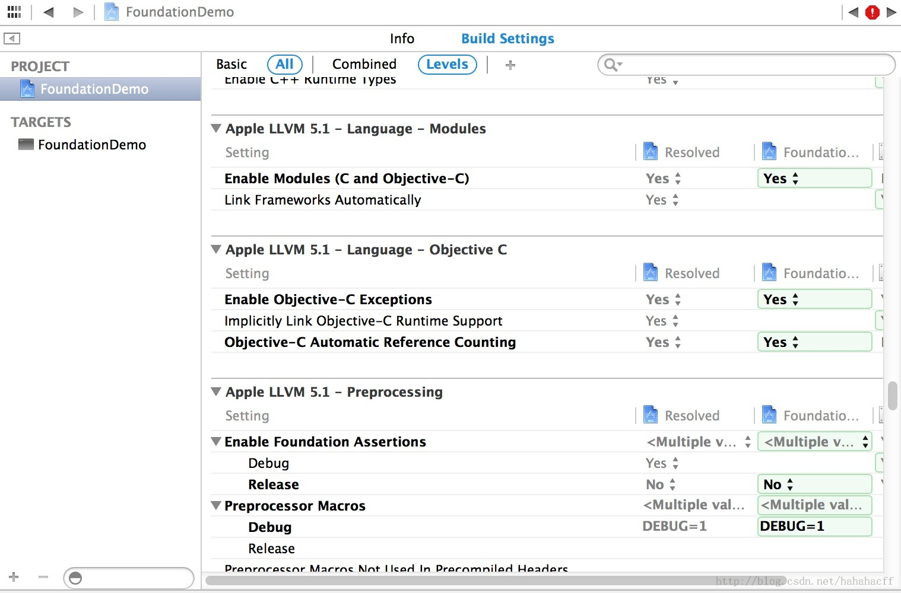

OC中ARC forbids explicit message send of release错误

很显然，是ARC的问题。
错误原因：在创建工程的时候点选了“Use Automatic Reference Counting”选项,但是又调用了对象的release方法
ARC是什么？
ARC 是iOS 5推出的新功能，全称叫 ARC(Automatic ReferenceCounting)。简单地说，就是代码中自动加入了retain/release，原先需要手动添加的用来处理内存管理的引用计数的 代码可以自动地由编译器完成了。该机制在iOS 5/ Mac OS X 10.7 开始导入，利用 Xcode4.2可以使用该机制。简单地理解ARC，就是通过指定的语法，让编译器(LLVM3.0)在编译代码时，自动生成实例的引用计数管理部分代 码。有一点，ARC并不是GC，它只是一种代码静态分析（StaticAnalyzer）工具。
解决办法：选择要项目，双击中间的工程名称，进入build setting
将中间的Objective-C Automatic Reference Counting改为no
解决办法：选择要项目，双击中间的工程名称，进入build setting
将中间的Objective-C Automatic Reference Counting改为no